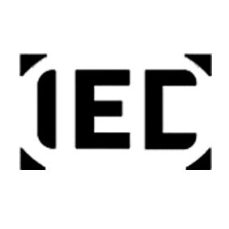

IEC 团队


团队介绍
IEC是来自电子科技大学IEC工作室的一支由五位前端爱好者组成的团队, IEC的全称是Interactive Experience Center(互动体验中心),在我们的团队中, 有新手也有大牛,我们怀揣对技术的满腔热情,报名参加了此次百度技术学院的课程, 我们将勇往直前.
关于百度前端技术学院
百度前端技术学院的课程任务是由百度前端工程师专为对前端不同掌握程度的同学设计.我们尽力保证课程内容 的质量以及学习难度的合理性,但即使如此,真正决定课程效果的,还是你的每一次思考和实践.课程多数题目的 解决方案都不是唯一的,这和我们在实际工作中的情况也是一致的. 因此,我们的要求不仅仅是实现设计稿的效果,更是要多去思考不同的解决方案,评估不同方案的优劣,然后使用 在该场景下最优雅的方式去实现. 那些最终没有被我们采纳的方案,同样也可以帮助我们学到很多知识.所以,我们列出的参考资料未必是实现需求 所必须的.有的时候,实现题目的要求很简单,甚至参考资料里就有,但是背后的思考和亲手去实践却是任务最关 键的一部分.在学习这些资料时,要多思考,多提问,多质疑.相信通过和小伙伴们的交流,能让你的学习事半功倍.